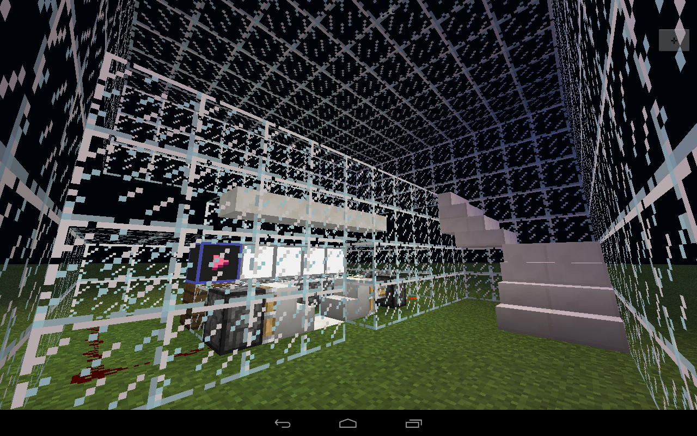
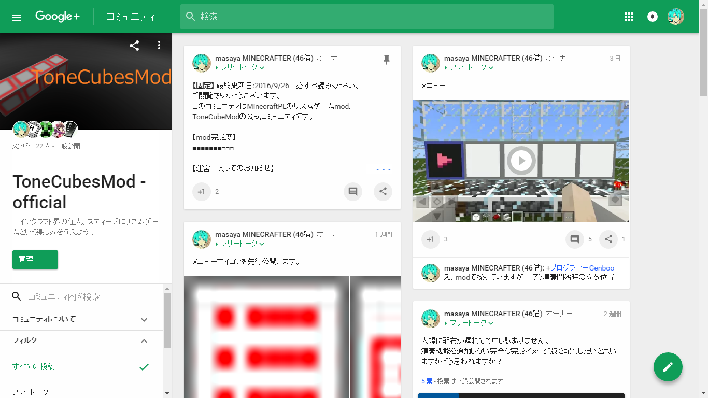
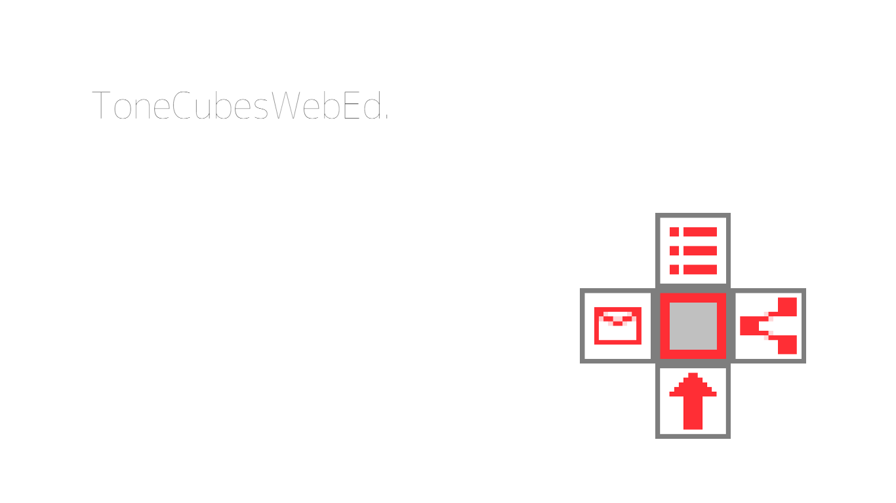

ToneCubeMod-OfficialHP-Home
ToneCubesMod-OfficialHP
HomeOfficialCommunityDownload楽曲作成ツールお問い合わせ
ToneCubesMod公式ホームページへようこそ！
このModはMinecraftPEでリズムゲームができるModです。
誰でも簡単に楽曲を追加できることを特徴としています。
このmodはMinecraftPEのmodランチャーBlockLauncher専用のModです。
Google+に公式コミュニティを設置し、連絡などが簡単に行えるようにしています。
こちらでは公式からの情報が一番最初に配信されます。

ToneCubesWebEd.を作成しました。
HTML5に対応したウェブブラウザがあればどなたでもお楽しみいただけます。(一部非対応のブラウザがあります)